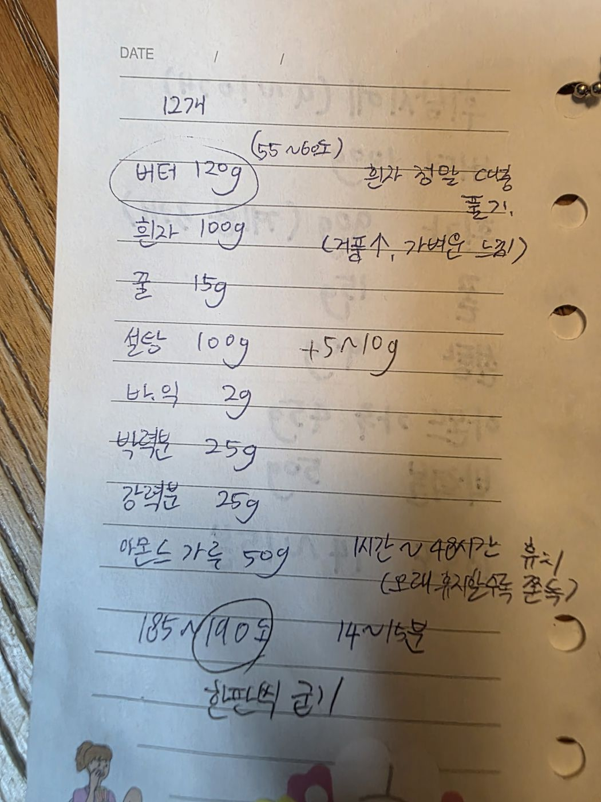

← 전체 레시피
구움과자
🥮 피낭시에
손으로 적은 노트를 그대로 옮긴 레시피입니다.
분량12개
굽기185~190℃ · 14~15분 (한 판씩)
📝 원본 노트에 제목이 없어 재료 구성(흰자·아몬드가루·버터)으로 보아 피낭시에로 정리했습니다.
📷 원본 노트 사진 보기
재료
재료
- 버터 120g (55~60℃)
- 흰자 100g
- 꿀 15g
- 설탕 100g (+5~10g)
- 바닐라익스트랙 2g
- 박력분 25g
- 강력분 25g
- 아몬드가루 50g
만드는 법
- 흰자는 거품이 나지 않게 정말 대충 푼다. (거품이 많으면 가벼운 식감이 된다)
- 꿀·설탕·바닐라익스트랙을 섞는다.
- 가루류를 체 쳐 섞는다.
- 55~60℃로 녹인 버터를 넣어 섞는다.
- 1시간~48시간 냉장 휴지. (오래 휴지할수록 쫀득하다)
- 185~190℃에서 14~15분, 한 판씩 굽는다.

원본 노트 사진 — 탭하면 크게 볼 수 있어요